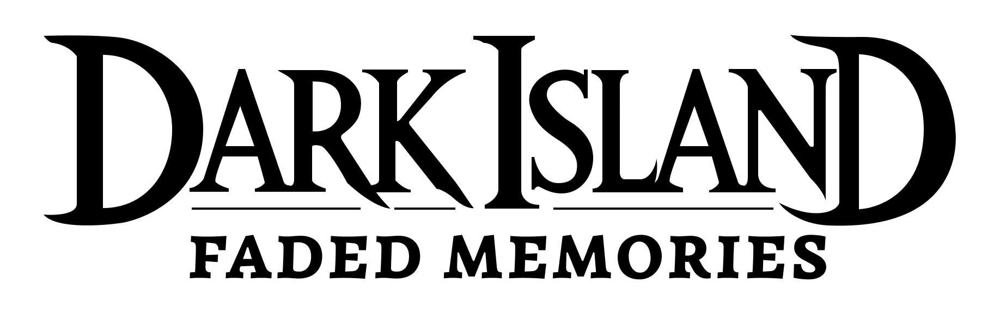
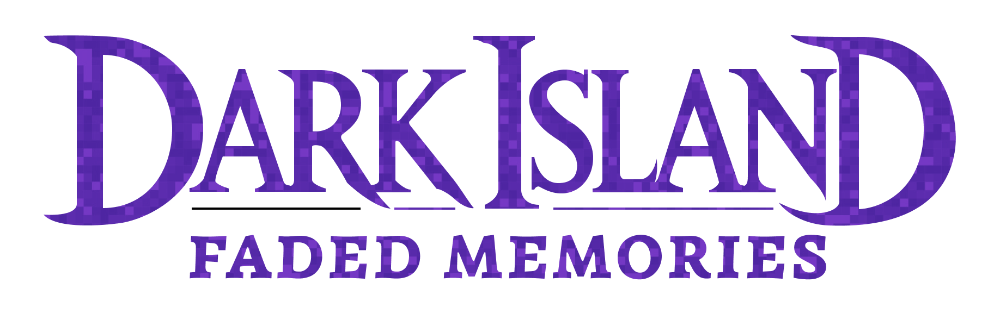
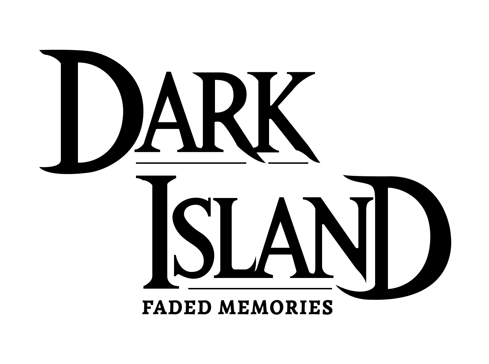

Botão ornamentado
Moldura prateada, bordas superior e inferior entalhadas, brilho azul-marinho. Fica dourado quando em foco.
Usado em: roda de configurações, diálogos
Monte dragões por ilhas esquecidas. Explore as ruínas de um mundo que caiu há muito tempo. Enfrente monstros e soldados caídos à espreita na escuridão. Jogue sozinho ou junte-se aos amigos no modo cooperativo. Gráficos e estilo nostálgicos que trazem de volta a magia da infância. Texto da Steam em inglês: “Ride dragons across forgotten islands. Explore the ruins of a world that fell long ago. Face monsters and fallen soldiers lurking in the dark. Play alone or join friends in co-op mode. Nostalgic graphics and style that bring back the magic of childhood.”
Molduras prateadas, seleção dourada e pequenas pontas em losango dão à interface um tom de high fantasy, enquanto painéis azul-marinho chapados mantêm o texto legível.
O HUD fica sobre cenas 3D enevoadas. Dourado sobre azul-marinho e um código de cores rigoroso para os recursos (azul, roxo, vermelho) o mantêm legível de dia e de noite.
Todas as telas são conduzidas por A / B / X, LB / RB e LT / RT. O foco está sempre visível, e a barra de dicas reflete o dispositivo ativo.
Um toque de aberração cromática e linhas de varredura suaves remetem ao visual da infância do texto da Steam, e o jogador pode ajustar os dois nas Configurações.
Os wireframes a partir dos quais os protótipos foram construídos. Clique em qualquer imagem para ampliar.
Barra de boss, o conjunto de armas com três layouts de load-out, barras de stamina / mana / vida, moeda, notificações de itens coletados e nameplates de NPCs, sobre uma cena de dia ou de noite.
Três load-outs, slots de frascos e armaduras ao redor de um personagem e um inventário com abas. Tooltips explicam um item, e o modo de comparação coloca o item equipado e o candidato lado a lado.
Um menu radial giratório à esquerda e um painel com abas à direita, com o mesmo cabeçalho e a mesma troca de páginas pelos botões de ombro da tela de Equipamentos.
Os componentes com os quais as três telas são montadas. Cada um tem estados, e os protótipos os reconstroem em código a partir dessas referências.
Moldura prateada, bordas superior e inferior entalhadas, brilho azul-marinho. Fica dourado quando em foco.
Ícone, nome e selo de nível. A linha selecionada ganha nome dourado, filete dourado e um spotlight escuro sob o texto.
Padrão, selecionado (dourado), selecionado com floreio no canto, agrupados em um painel dourado e um estado desativado acinzentado.
Dois slots ativos grandes e quatro pequenos. O par ativo se move para a esquerda, o centro ou a direita conforme o load-out.
Arte pintada de itens para armas e magias, mais glifos de uma cor só para categorias, escudos, frascos, elmos e requisitos de mãos.
Setas verde para cima e vermelha para baixo na comparação, um losango neutro e os ornamentos de montanha e ponta de flecha.
#E3C61A seleção, títulos#CFD3DC molduras, corpo de texto#1D44AD → #0A1233 painéis#5BE08B mais forte#F0585C mais fraco, vida#8A5AE0Como as telas se conectam nos protótipos. LB e RB alternam entre as páginas do menu principal, e Continuar sempre volta ao jogo.
Clicáveis, no navegador e conectados: os itens que você equipa aparecem no HUD, e as opções de gráficos mudam a cena do HUD. Eles não têm o chrome do portfólio, então funcionam como as telas do jogo.

Cenas de dia e de noite, barras, conjunto de load-out, itens coletados, nameplates. Um painel de demonstração (?) dispara eventos do jogo.
Abrir HUD →
Navegue pelo inventário, compare itens com um slot, equipe, desequipe ou descarte. Os atributos são atualizados ao vivo.
Abrir Equipamentos →Um menu giratório com controles reais: chaves, sliders e seletores, salvos no seu navegador.
Abrir Configurações →O logo usa uma serifa gótica com uma inicial em leque, sobre um motivo recorrente de dragão. A UI toma emprestado esse clima nas molduras ornamentadas e na fonte de exibição, mas é mais discreta para que o mundo continue sendo a estrela. Os ativos da marca aparecem apenas nesta página, nunca dentro dos protótipos.

Principal, preto

Textura de pixels
Contorno sobre fundo escuro

Empilhado
Jogo: Harpia Games e Venn.
Design de UI e design do logo: David Smith, tudo: o HUD, as telas de equipamento e configurações, o UI kit, os protótipos desta página e o logo e a marca.
O jogo está na Steam ↗.
A tela de Mapa, a UI de modo cooperativo e o conteúdo real das configurações ainda não estão nos wireframes. As configurações do protótipo são ilustrativas.